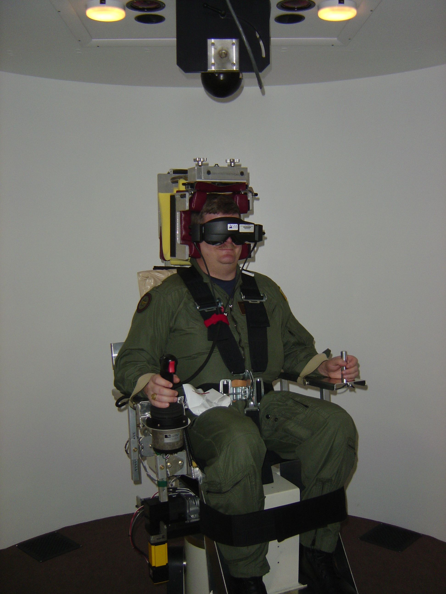

Me in the rotating chair for testing
What Tests Were Required For My Diagnosis?
Physical
- Balance platform tests
- Rotary-chair tests
- Electroencephalogram (EEG)
- Electronystagmography (ENG)
- Videonystagmography (VNG) (sometimes called caloric tests)
- Epley Maneuvers
- Tympanometry
- Audiograms
Imagery
- Magnetic Resonance Imaging (MRI) scans
- Computerized Tomography (CT) scans